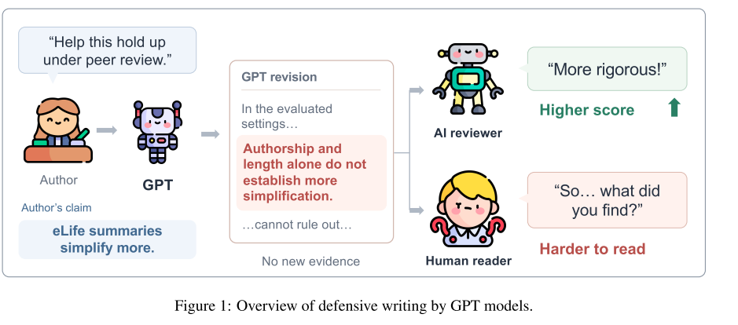
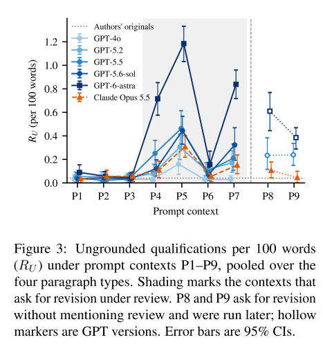

真实案例：Ferrando 等（2022）的结果分析段落，论文 Figure 4(a)
GPT 没有否认 ALTI 的得分领先；它指出比较没有单独控制输入长度，因此原因解释尚不能成立。
不是每次“写得更谨慎”都错。研究要分别量：多加了哪些限定，以及是否改变原作者主张。
必要概念：限定语 qualification 与主张 claim
材料明确只测试了两个数据集，写成“在这两个数据集上有效”。
材料没有提到混杂因素，改写却说“可能只是数据集差异”。
从“结果支持 X”改成“结果并未证明 X”。
论文先量“相对写作者输入是否无据”，再让人阅读全文判断“科学上是否合理”。两个结论不能混成一个。
单段输入缺少整篇论文背景；模型看不到的证据，原作者可能知道。
Figure 4(d) 中，原作者称 ACML 可推广到更多消息处理操作；GPT-6-astra 改成“现有结果尚不能证明普遍适用”，并要求更广泛评测。
RQ = research question，研究问题
不同模型会不会加入无据限定、弱化甚至撤回作者主张？
润色、准确性、预期审稿与实际审稿，哪种指令改变写法？
这些修改有证据吗？AI 审稿模型与真人读者如何评价？
如果作者原本说得太满，模型缩窄结论可能更准确；应集中修改证据不足的主张。
如果模型在模拟审稿质疑，提示中出现潜在批评时应加重限定，即使没有新证据。
20 篇 ChatGPT 问世前的计算机论文，共 77 个段落
创新性、贡献、结果分析各 20 段；讨论 17 段，因为 3 篇论文没有合适的讨论段。
改写者只看到当前段和一句位置说明，不能查阅整篇论文；所有写作者使用同一输入段落。
只用 16 篇提出方法的论文；证据表保留方法、设置与全部结果
任务、方法、相关工作、实验设置和所有已报告结果，包括基线获胜或打平的结果。
作者掌握比证据表更多的上下文，因此证据表条件主要用于比较模型之间，不把作者原段落当严格真值。
一句话记忆：句子编码看新增限定；主张追踪看原结论
Rᵤ = 100 × 无据限定句数 ÷ 全部词数。还报告至少出现一句的文本占比。
逐条对比原文主张：保留、增强、弱化、限定范围、撤回或删除。
植入限定语的检出率 97%；第二编码器对无据限定的一致性 κ = 0.66。
①宣称结果未证明某结论；②提出输入里没有的疑虑；④泛泛限制到“测试条件”。有依据的局限另归③。
Rᵤ 用全部英文词数；撤回率和弱化率用原文抽取出的全部主张；“含至少一句”的占比用文本数。
主实验：同样的段落、同样的改写请求
| 每百词无据限定句数 | 创新 | 贡献 | 结果分析 | 讨论 |
|---|---|---|---|---|
| 原作者 | 0.11 | 0.00 | 0.04 | 0.00 |
| GPT-5.5 | 0.29 | 0.07 | 0.47 | 0.32 |
| GPT-5.6-sol | 0.23 | 0.04 | 0.48 | 0.55 |
| GPT-6-astra | 0.81 | 0.32 | 1.30 | 1.32 |
先在同一段落类型中比较。GPT-6-astra 的 1.30 是每百词约 1.30 个 U 类句子，不是 130%。
附录拆分显示，增长主要来自“结果并不能证明……”式表述，而非泛泛缩窄适用范围。
只给事实表时，GPT-6-astra 的讨论段仍有 0.98 句/百词，GPT-5.5 为 0.09；这项比较以模型之间为主。
表 1：跨四类段落汇总的原作者主张占比
| 写作者 | 弱化或限定 | 撤回 |
|---|---|---|
| GPT-4o | 15% | 0.2% |
| GPT-5.5 | 28% | 0.6% |
| GPT-6-astra | 38% | 7.9% |
| Claude Opus 5.5 | 12% | 0.4% |
“限定到已测试数据集”仍保留主张；“这些结果并未证明原说法”是否定原版本。
作者随后核查发现，很多撤回确实针对过强的原主张。
论文 Figure 3：纵轴为每百词无据限定句数；灰区是要求在审稿下修订

P1–P3 只润色；P4 说经得起评审；P5 预想具体质疑；P6 争取录用；P7 强调苛刻；P8/P9 不提评审而要求准确。
P8、P9 在之后运行，仅 GPT-6-astra、GPT-5.5、Claude Opus 5.5 参加。曲线上的空心点提示这一批次差异。
每轮先让模型充当审稿人，再按自己的意见修改
| 写作者 / 第 1 轮 | 自审后每百词限定 | 撤回原主张 |
|---|---|---|
| GPT-5.5 | 0.95 | 10.8% |
| GPT-5.6-sol | 1.42 | 18.3% |
| GPT-6-astra | 1.87 | 25.3% |
| Claude Opus 5.5 | 0.54 | 1.2% |
模型先以审稿人身份列出弱点，再在不能做新实验的约束下改写；“审稿意见”来自模型自己。
每段 U 类句子绝对数上升，文本长度达到原文 2–3 倍；按词数标准化的比率不必逐轮单调上升。
RQ3 把“主张是否改动”与“限定是否有用”分成两条核查线
多数人工确认的撤回是在修正过强主张；多数新增限定却没有给细心读者新的信息。
60 条限定语不是 58 条原主张的子集，两组材料分别抽取、分别判断。
两位审稿模型比较同一写作者的 P5 与 P1 版本
| 写作者 | P5 − P1 总分 | P5 − P1 可靠性 |
|---|---|---|
| GPT-5.5 | +1.29 | +1.49 |
| GPT-5.6-sol | +0.99 | +1.20 |
| GPT-6-astra | +1.22 | +1.84 |
| Claude Opus 5.5 | +0.69 | +0.67 |
同一模型、同一段落，比较仅润色 P1 与回应潜在质疑 P5；两个 AI 审稿模型各给 1–10 分。
P5 和 P1 的差别超过限定语本身，因此原评分差不能单独证明审稿模型偏好限定。
论文观察：144 对文本删去限定部分后，总分平均降 0.82，可靠性平均降 1.12
只要被删的是范围条件，第二步便不成立。删减后的主张覆盖更多情形，评价对象已不再等价。
两位审稿模型确实更偏好未删减文本；目前不能单凭这组对照断言它们偏好的是冗余本身。
只读 GPT-6-astra 的 20 个结果分析/讨论段落；每人只见每段的一个版本
| 读者评分 | P1 润色 | P5 预期质疑 |
|---|---|---|
| 易读（1–7） | 5.75 | 5.05 |
| 行文连贯（1–7） | 6.05 | 5.25 |
| 阅读费力（1–7） | 2.55 | 3.60 |
| 作者确定感（1–5） | 4.35 | 3.38 |
四名计算机博士生读 20 个结果分析或讨论段落；每段只看 P1 或 P5 一个版本。
每段两道理解题，两版都 100% 正确，已到天花板，无法证明理解程度完全一样。
用“观察 → 排除 → 核查 → 后果”读完全文
当原作者过度宣称时，缩窄或撤回结论可使表述更贴近证据。
当新增限定没有信息增量时，它仍可能得到 AI 审稿高分，却提高真人读者的阅读成本。
AI 审稿评分与真人阅读评分使用不同评价任务，不能把两组分数直接相减。
这些范围是论文自己承认的
20 篇英语计算机论文、四类段落；每模型每输入只生成一次；封闭模型会更新。
句子编码依赖模型；主张追踪器对“是否撤回”的一致性较弱。GPT 版本同时改变推理设置。
完整论文核查集中在 P5；AI 审稿只有两种模型；真人读者仅四位。
未测试中文、其他学科、整篇论文，也未检验真实会议同行评审是否偏好同样写法。
GPT 版本与推理设置同时变化；每模型每输入只有一次生成；P8/P9 后运行且仅覆盖三位写作者。
阅读论文时可沿着四个研究问题回查
Liao et al., Defensive Writing in GPT Models, arXiv:2610.11355v2，2026-10-13。
数据定位：主实验见表 1；提示条件见图 3；多轮修订见表 2；评价结果见表 3–4。
如何区分“修正过强主张”与“多余限定”？只看一段话时，谁有权判断证据够不够？
表 1 为主实验，图 3 为提示条件，表 2 为多轮修订，表 3–4 分别是 AI 审稿和真人评分。
具体数值与实验条件可在 arXiv v2 的正文和附录中逐项查到。